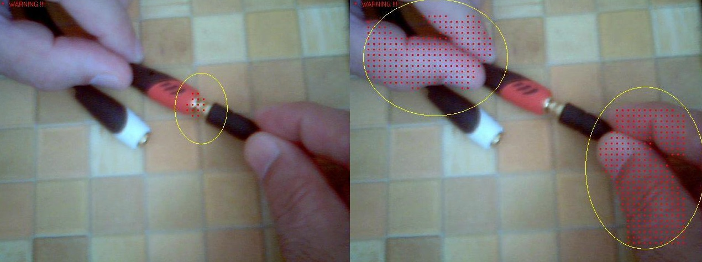

Project Presentation
Sampletalk:
Nature-inspired algorithm design
● in logic
● in natural language understanding
● in question answering
● in image and video understanding

Can nature-inspired constructions
replace artificial formalisms such as
logical predicates and formal grammars?
Definition of Alternative Programming
by a metaphoric comparison with Alternative Medicine
(Slideshow)
The philosophy of programming by samples
(Slideshow)
Description of Sampletalk language and compiler
Data processing example abstraction immediately becomes
a useful program if text matching is in focus.
Program examples and experiments.
Download Sampletalk Compiler Version 3.2 (August 2022) for Windows
Generalization of First Order Predicate Calculus
Alternative treatment of First Order Logic:
theoretical analysis
Verbal Description Generalization:
Alternative treatment of Knowledge Representation
Automatic synthesis of Sampletalk programs
Inductive reasoning for the extraction of useful algorithms
immediately from text data
Object Recognition System Design
for finding objects in images and video sequences
Universal Classification System
for classification of multiple objects in images and video sequences
|
This nature-inspired technology is also tested for video processing: it facilitates the creation of various intelligent vision systems using a single universal approach, which is based on so called image samples. The system is trainable for detecting various objects and situations – on the road, in a production line, in working environment etc. Signals of different nature and sources can be recognized by such a system and joined into a simple alerting language (see the red dots and the warning messages in the image above and in the videos below): |
|
|
|
|